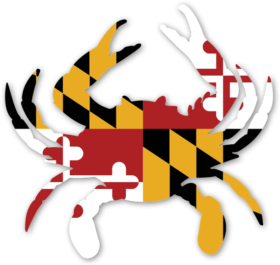

I'm Grace,
A UX designer based in Maryland

I am a lifelong learner, an artist, and lover of nature and animals. My degree in history stemmed from my initial plan for pre-law; I learned to contextualize the world critically and think from different perspectives in every situation.
As I gradually realized that law school was not my path, illustrating for UCLA's Daily Bruin had reignited my passion for design, and front-end development projects sparked a growing interest in coding, which led to my transition into Human-Computer Interaction and User Experience (UX).
Learning user problems and creating prototypes for them has inspired me to strive to (through tech-levering) transform complicated user experiences into simply practical and beautiful digital solutions that foster meaningful tech usage.
Education
General History, A.A
General History, B.A
User Experience Certificate
Python Programming Certificate
Human-Computer-Interaction, M.S
Experience
UCLA's Student Media
UMD's Interdisciplinary Student Organization